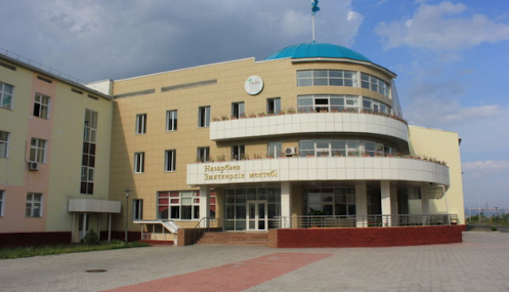
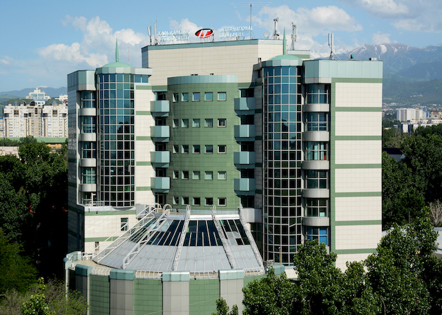
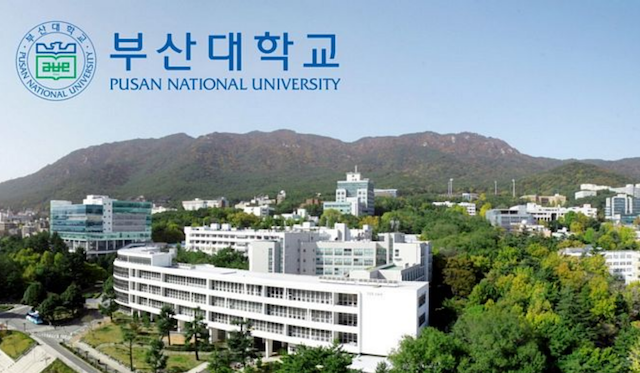

I graduated NIS of Physics and Mathematics in my hometown, Taldykorgan. NIS stands for Nazarbayev Intellectual Schools. They are located in almost every city in Kazakhstan and highly respected in the whole country. My major subjects were maths, physics and IT.

My lovely school in my hometown, Taldykorgan.
After schoold graduation I decided to study in the IITU which stands for International IT University in Kazakhstan, ALlmaty. IITU is the best IT university in Kazakhstan. I won full tuition waiver and national scholarship. After 1 year of studying here I understood that I need to study in a better place to improve and left IITU.

My first University in Kazakhstan, Almaty.
Since 2021 I am studying here, in Pusan National University, located in South Korea, Busan. My major is computer science and engineering. I am in love with my universities and planning to graduate this University. I am very motivated to study hard and reach some heights.

My current university. Pusan National University, South Korea, Busan.
자격사항
PNU best Youtube Marketer award, 2022
"CS50's Introduction to Computer Science by Harward University", 2021
Hello everyone! As you might already see, my name is Suienish Daulet. I am a PNU student from Kazakhstan majoring in Computer Science and Engineering. Now, I am trying to become better in programming to find an internship or job to gain some experience. I am studying at the university and practicing my skills through different courses on the internet. Also, I go to the gym and try to stay fit because I lead a sitting life. In my free time, I play basketball and watch movies. I am a huge movie guy. My favorite actor is Christian Bale, and my favorite movie is maybe "Lalaland" or "Oldboy". Majorly I study SWIFT to become an IOS developer but I also try to study WebDEV, Data Analysis, and Machine learning as I am not yet sure which field of programming to choose. Hope that will be enough. Nice to meet you!